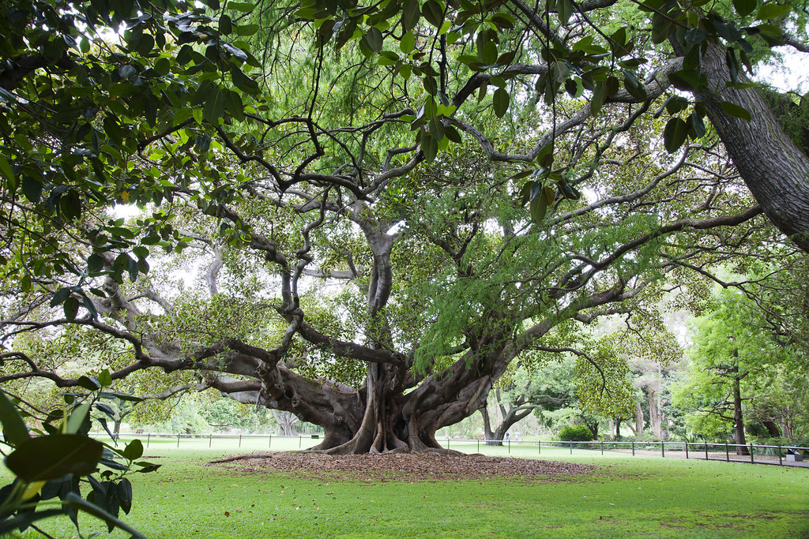

 I saw my life branching out before me like the green fig tree in the story. From the tip of every branch, like a fat purple fig, a wonderful future beckoned and winked. One fig was a husband and a happy home and children, and another fig was a famous poet and another fig was a brilliant professor, and another fig was Ee Gee, the amazing editor, and another fig was Europe and Africa and South America, and another fig was Constantin and Socrates and Attila and a pack of other lovers with queer names and offbeat professions, and another fig was an Olympic lady crew champion, and beyond and above these figs were many more figs I couldn't quite make out. I saw myself sitting in the crotch of this fig tree, starving to death, just because I couldn't make up my mind which of the figs I would choose. I wanted each and every one of them, but choosing one meant losing all the rest, and, as I sat there, unable to decide, the figs began to wrinkle and go black, and, one by one, they plopped to the ground at my feet.” ~Sylvia Plath